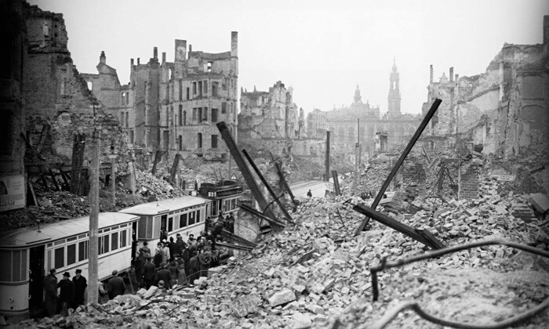
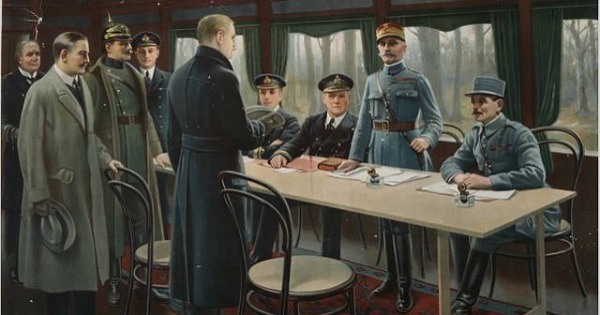

1ª Guerra Mundial
Um pouco sobre a 1ª Guerra Mundial
O que foi?

A Primeira Guerra Mundial foi um marco na história da humanidade. Foi a primeira guerra do século
XX e o
primeiro conflito em estado de guerra total – aquele em que uma nação mobiliza todos os seus
recursos
para
viabilizar o combate. Estendeu-se de 1914 a 1918 e foi resultado das transformações que aconteciam
na
Europa, as
quais fizeram diferentes nações entrar em choque.
Resultado da Primeira Guerra

O resultado da Primeira Guerra Mundial foi um trauma drástico. Uma geração de jovens cresceu
traumatizada
com os horrores da guerra. A frente de batalha, sobretudo a Ocidental, ficou marcada pela
carnificina
vivida nas
trincheiras e um saldo de 10 milhões de mortos. Os desacertos da Primeira Guerra Mundial
contribuíram
para que,
em 1939, uma nova guerra acontecesse.
Causas principais

As causas da Primeira Guerra Mundial são extremamente complexas e envolvem uma série de
acontecimentos
não resolvidos que se arrastavam desde o século XIX: rivalidades econômicas, tensões nacionalistas,
alianças
militares etc.
De maneira geral, os principais fatores que contribuíram para o início da Primeira Guerra Mundial
foram:
- disputas imperialistas;
- nacionalismos;
- alianças militares;
- corrida armamentista.